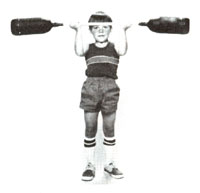

More and more these days, the fitness craze seems to affect all age groups. And, understandably enough, many youngsters want their own weight set . . . a $25 (more or less) item that [1] isn't as much fun to use as other playthings and [2] doesn't deliver the instant results that most youngsters seem to expect.
Since it'd be a shame to discourage a fledgling Atlas (but equally unfortunate to squander funds on something that very likely won't be used for long), we've put together this budget barbell that you can probably duplicate for a few cents' worth of material.
The weights themselves are nothing more than 2-liter plastic soda bottles, painted black and filled with sand. The bar is a 44" length of 1/2" electrical conduit shoved into the containers and held fast with electrical tape. To prevent the ballast from spilling out easily, we've used the bottle caps as seals by punching conduit-sized holes through them. (This can be accomplished by filing one end of the bar to a sharp edge and tapping it, through the lids' thin metal, against a block of wood.)
Once the caps are pierced and slipped, open sides facing outward, over the bar, you can wrap that shaft with tape (at points 12 inches in from the ends) to build up its diameter, and then work each end into its sand-filled container. Finish up by threading the caps onto the bottles and taping them to the bar. A coat of flat black enamel will lend the vessels the necessary barbell look.
The finished product should tip the scales at about 15 pounds . . . and will give penny-conscious parents a good excuse for not purchasing the genuine article until their bodybuilder-to-be develops enough self-discipline to stick with a regular lifting program.
|
 STAFF PHOTO |
|
|